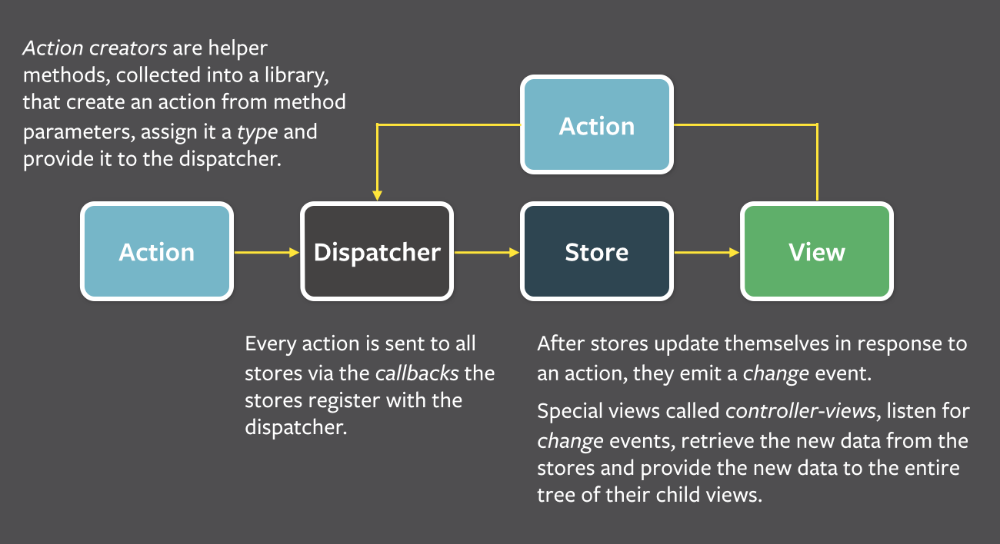
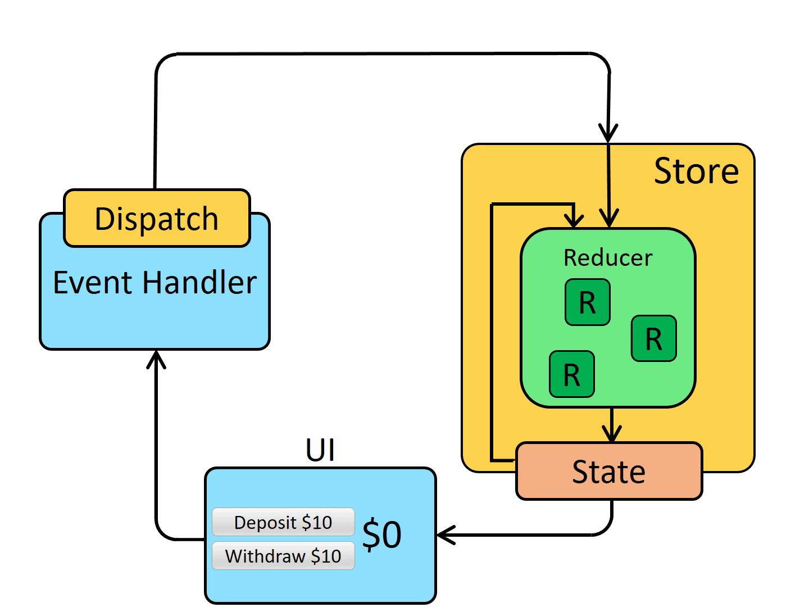

要谈论 react-redux 得先从了解 flux 和 redux 开始，flux 本身是一种架构模式，redux 是一个实现了 Flux 架构模式的面向 JS 的通用状态管理器， react-redux 提供了一种机制使得我们能够更方便的在 react 中使用 Redux。
Flux 模型
Flux 是 Facebook 用于构建客户端 Web 应用程序的应用程序体系结构，它更像是一种模式，而不是正式的框架。 Flux 模型包含三个主要部分：Dispatcher，Store 和 View(React组件)。Flux 避免使用 MVC 来支持单向数据流。 当用户与 View 进行交互时，View 通过 Dispatcher 将 Action 分发到保存应用程序数据和业务逻辑的 Store，然后再更新受影响的 View。 在外部不能直接修改 Store 的数据，必须通过 Dispather 传递 Action 给 Store 中注册的回调函数来实现数据修改，这有助于将关注点清晰的分开。

Flux 应用程序的数据沿单一方向流动，上图中 Dispatcher、Store、View 是具有独立输入输出的节点，Action 是一个简单对象，包含新数据和标识 Action 类型的 type 属性。 用户与 View 的交互会在系统中产生 Action 传播。
- 所有数据都流经 Dispatcher，提供给 Dispatcher 的 Action 是通过 Action creator 方法创建的对象，这通常来自用户与视图的交互。
- Dispatcher 通过调用注册在 Store 中的回调函数完成 Action 到 Store 的分发。在已注册的回调中，Store 将响应与其所维护状态相关的具体操作。
- Store 触发
change事件，将数据层的变化通知到 Controller-views。 - Controller-views 监听这些事件，并从 event handler 中读取来自 Stores 的数据。
- Controller-views 调用他们自己的
setState()方法，从而在组件树中更新自身及其所有后代。
这与双向数据绑定有着显著不同，应用程序状态仅在 Store 中维护，从而使应用程序的不同部分保持高度分离。单项数据流，也使整个系统变得更加可预测。 双向数据绑定会导致级联更新，其中更改一个对象会导致另一个对象更改，这也可能触发更多更新。随着应用程序的增长，这些级联更新使得由用户交互而发生的变化很难预测。
1.1 Dispatcher
Dispatcher 是 Flux 应用程序的中央调度器，能够分发 Action 到 Store 中。它维护一个 callback 注册表，这些回调函数(callback)能够与 Store 进行交互。 每个 Store 都在 Dispatcher 中注册自己并提供回调函数，当 Action creator 提供一个新的 Action 给 Dispatcher 时，Store 可以通过注册到注册表中的 callback 接收 Action。
随着应用程序的增长，Dispatcher 会变得越来越重要，它还可以通过按特定顺序调用注册的 callback 来管理 Store 之间的依赖关系。 Store 也可以声明性地等待其它 Store 完成更新，然后再进行相应的更新。
1.2 Store
Store 存储应用程序状态和逻辑。如上所述，Store 在 Dispatcher 中注册自己，并为其提供 callback。该 callback 将 Action 作为参数接收，callback 内部基于 Action type 的 switch 语句为不同类型的 Action 执行不同的操作，这使得 Action 能够通过 Dispatcher 更新存储在 Store 中的数据。Store 更新后，它会广播一个事件，声明其状态已经更改，视图可以查询新状态并完成更新。
1.3 Controller-view
React 提供了视图的嵌套能力，在嵌套视图层次的顶部，我们可以通过一个特殊视图订阅 Store 的广播事件，我们称这样的视图组件为控制器视图(Controller-view)，
它能够从 Store 中获取数据，并向下传递至其后代链。当从视图接收到事件时，可通过 Store 的 getter 方法请求所需数据，
然后，调用 setState() 或 forceUpdate() 方法促使自己和后代的 render() 方法运行。
1.4 Action
Action 是一个简单的 js 对象，用以描述 Flux 模型中的动作，其结构为 {type:'type',payload:'data'}。可以将其发送给 Dispatcher 公开的方法，以实现 Action 到 Store 派发。
Redux 模型
由于 Flux 本身并不是框架，因此开发人员已尝试提出 Flux 模式的许多实现。最终，一个明显的赢家出现了，那就是 Redux，其已成为 React 生态中开发人员集中管理应用状态的事实标准库。
Redux 是一个面向 JS 应用程序的可预测状态管理器，它使用基于 Action 的事件模型来管理和更新应用程序状态，从而现集中化管理应用程序状态和逻辑。 作为一个通用解决方案，Redux 可与任何 UI 层一起使用，如 React、Angular、Vue 等。虽然 Redux 是 Flux 架构的实现，但也存在一些细微差异。
2.1 Actions
这与 Flux 中的定义相同，Action 是一个 JS 简单对象，包含 type 字段及一些可选的载荷信息。可以把 Action 理解为描述应用中事件的描述。
|
|
2.2 Action Creators
Action Creator 是一个创建并返回 Action 对象的方法，通过它可以避免在每次使用 Action 时书写重复的代码。
|
|
2.3 Reducers
Reducer 是一个函数，它接收两个参数，分别为当前 state 和 action 对象，Reducer 内部决定如何更新 state，并返回一个新的 state。可以描述为 (state, action) => newState。
可以把 Reducer 视为事件侦听器，该事件侦听器根据接收到的 action(event) 来处理事件。Reducer 必须遵循下列规则：
- 通过
state和action参数计算并返回 全新的state； - 不能修改已经存在的
state，内部可以通过拷贝已经存在的state进行相关操作； - 不能具有副作用(side effects)。如果用同样的参数两次调用必须返回可预期的结果，内部不能出现如异步或 random 之类的操作；
|
|
Reducer 内部可以通过 if/else 或 switch 等语句，根据不同的 action.type 作出不同的响应并返回新的 state。
2.4 Store
Redux 应用的当前 state 保存在一个称为 Store 的对象上，Store 对象通过传入 Reducer 创建，并对外提供 getState 方法，该方法返回当前 state 信息。
|
|
2.5 Dispatch
Redux Store 对象还拥有一个名为 dispatch 的方法，更新 state 的唯一方法就是传递一个 action 对象给该方法。Store 内部会执行 reducer 方法，并保存一份新数据。
当我们再次调用 getState() 将会返回更新过的 state。
|
|
您可以将 Dispatch 视为 触发事件，通过 Dispatch 通知 Store 应用中存在 Action 需要处理，Reducer 的行为就像事件侦听器，当他们接收到自己感兴趣的 Action 时，会响应事件并更新状态。
2.6 Selector
Selector 是可以从 Store State 中提取特定信息的函数。当应用程序变得庞大时，它将变得很有用。
Redux 数据流
- 初始化
- 使用 root reducer 创建 Redux store;
- Store 调用
reducer并保存其初始值； - 当 View 第一次被渲染，会从 Redux store 中访问当前
state并根据state渲染视图。View 也可以订阅 Store 的变更消息，这样在未来当 state 再次变化，视图就能够发现并处理它。
- 更新数据
- 当一些事情在应用中发生，如用户点击了某个按钮，会创建 Action；
- 分发 Action 到 Redux Store，代码类似
dispatch({type:"counter/increment"}); - Store 再次执行 reducer 函数，通过之前的
state和action完成计算、存储并返回新的state； - Store 通知所有订阅了 Store 数据变更消息的 View 组件；
- 每个依赖
state数据的 View 组件都会对state数据进行检查，以确定是否需要重新渲染自己； - 需要重新渲染的组件使用新数据完成渲染。

React-redux
Redux 本身是一个独立的库，可与任何 UI 层或框架一起使用，通常需要使用 UI 绑定库 将 Redux 与 UI 框架绑定在一起，而不是通过 UI 代码直接与 Store 进行交互。
React Redux 是 React 的官方 Redux UI 绑定库，它使得 React 组件可以从 Redux store 读取数据或分发 action 到 Store 以更新 state。
4.1 Provider
React Redux 提供了一个 <Provider /> 组件，将 store 对象以 props 形式注入到组件中，可以使其所有子组件中均可访问到 store 对象。
|
|
4.2 Connect
React Redux 通过名为 connect 的函数将组件和 store 对象进行链接，随后在组件内部能以 props 的形式访问 dispatch 和 state。
|
|